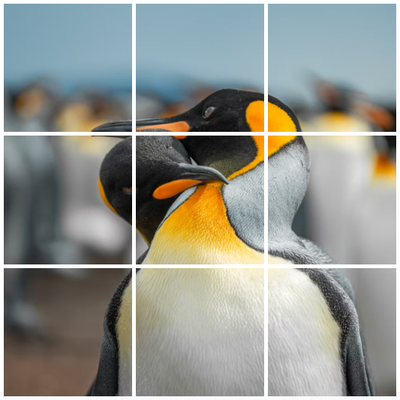
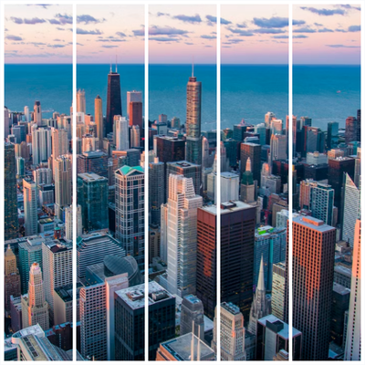

在线图像分割器
一键将图像分割成 2、3、6、9 个或更多相等的部分。支持 3:4、4:5、1:1 等预设宽高比，操作过程实时预览每个切片，支持下载单个图像和 ZIP 打包下载。无需注册，无需安装软件，也无任何隐藏费用。
拖拽图像到此处，或点击上传
支持 JPG、PNG、WebP，最大 50 MB。
如何使用图像分割器
1. 上传图像
上传 JPG、PNG 或 WebP 图像（最大 50 MB）。所有处理都在浏览器本地完成，文件不会离开您的设备。
2. 分割设置
选择宽高比预设（默认、4:5、3:4、1:1）和分割模式（垂直、水平、网格），然后调整分割范围选择框以确定分割区域。
3. 下载结果
预览分割结果后，可下载单张图像，或将全部结果导出为 ZIP 文件。支持 JPG、PNG、WebP 格式。
什么是 AI Image Splitter？
AI Image Splitter 是一款浏览器端图片分割工具，可将一张图像分割为多个相等部分。它内置 3:4、4:5、1:1 等宽高比预设，以及垂直、水平、网格 3 种分割模式。无论您是用于社交媒体发布、A4 打印排版还是图像拼贴，都可以快速完成设置并立即导出。所有处理都在您的设备本地完成，图像不会上传到服务器。您可以选择宽高比预设、分割模式，设置行列，调整分割范围选择框，并将结果按单张或 ZIP 方式导出为 JPG、PNG、WebP。
AI Image Splitter 的特点

免费且易用
无需注册、无水印、无隐藏费用、无使用次数限制，打开浏览器即可使用完整功能。
分割设置灵活
支持将图像分割为 2、3、4 或更多相等部分，并提供宽高比预设、分割模式和自定义网格设置。
覆盖常见使用场景
适合用于 Instagram、TikTok 网格发布、轮播帖子、A4 打印排版、图像拼贴、课堂资料及日常导出场景。

界面操作简单
上传、设置、预览、导出流程清晰，通常在短时间内即可完成。
本地处理
所有处理都在浏览器本地运行，图像不会上传到服务器。
导出方式高效
支持单张下载，也可将全部结果打包为 ZIP，便于发布和整理。
AI Image Splitter 的常见使用场景
社交媒体网格与轮播发布
将一张图像分割为多个相等的块，适用于 Instagram、TikTok、Pinterest 等平台的网格和轮播内容。
店铺展示与拼贴排版
用于商品图拼贴、视觉看板和宣传素材组合，帮助保持版面统一和视觉对齐。
A4 打印与文档分割
将大图分割为适合 A4 打印或 PDF 文档插入的部分，便于教学、汇报和线下使用。
网页与多区域展示素材
将图像拆分为多个模块，便于在网页分区或多区域展示中进行灵活排版。
长图内容拆分
将长图拆分为更易发布和阅读的多个部分，适合分步展示与连续内容呈现。
教学与团队协作流程
统一上传、设置、预览、导出流程，便于课堂演示、团队协作和日常内容生产。
如何更高效地使用 AI Image Splitter
提高分割质量与导出效率的实用建议
请使用高质量的图像
尽量使用清晰、分辨率较高的原图，可显著提升分割后每个部分的显示效果。
选择合适的宽高比和分割模式
在开始分割前，按照分割用途和原图特点，先选择合适的宽高比预设和分割模式，可减少后续重复调整。
优先保证主体区域完整
调整分割范围选择框时，确保主体内容尽量完整地保留在每个分割结果中。
先预览再导出
先检查行列设置与分割边界，然后通过实时预览确认无误后，再进行单张下载或 ZIP 打包导出，可避免返工。
按用途选择输出格式
社交平台优先考虑文件体积（比如：JPG），透明背景或细节保留场景优先选择合适格式（比如 PNG），网页优先选择 WebP。
常见问题
关于格式支持、隐私处理、下载方式和分割设置的常见问题解答。
准备开始分割图像了吗？
上传图像，选择分割模式和网格设置，预览结果，然后下载单张文件或 ZIP 打包文件。
请先上传图像